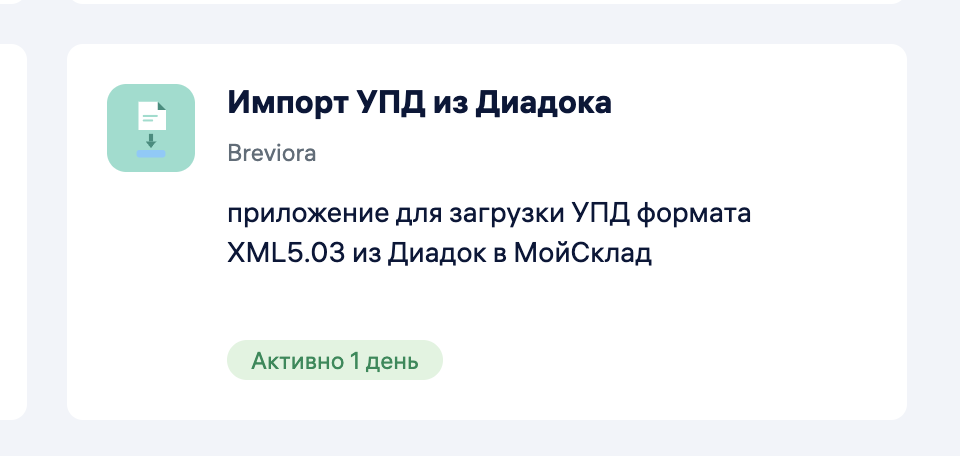
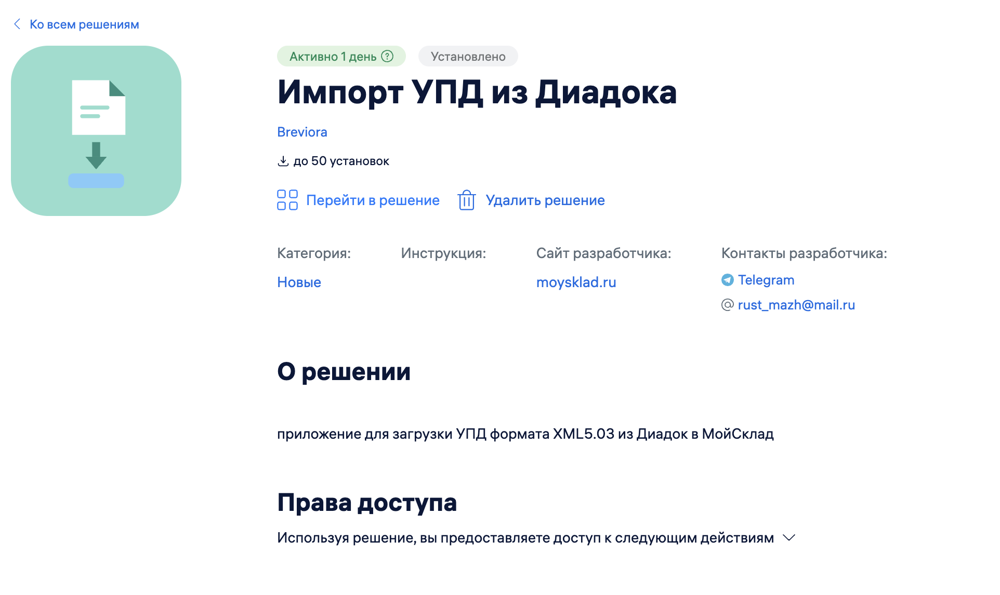
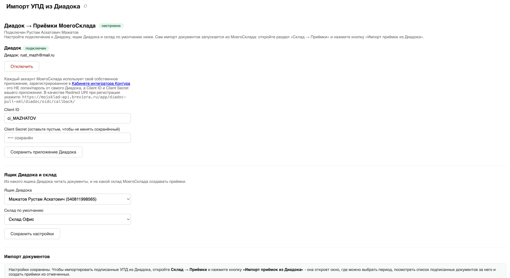
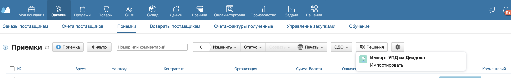
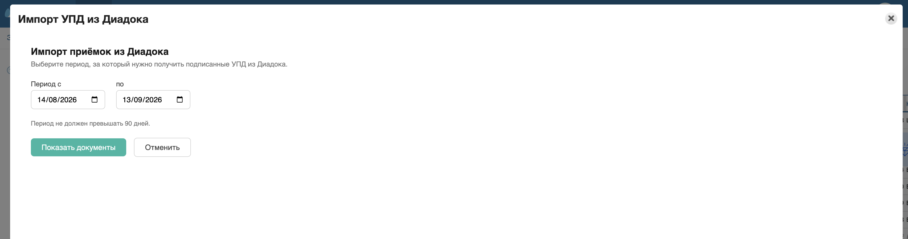
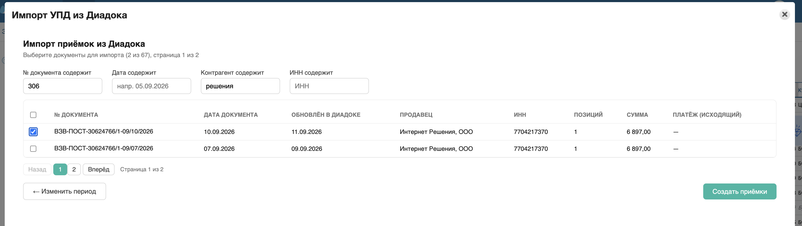
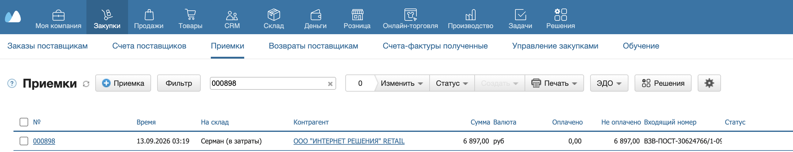

Импорт УПД из Диадока
Решение забирает подписанные входящие УПД из вашего ящика Контур.Диадок и создаёт приёмки в МойСклад. Импортируются только формальные УПД (СЧФДОП/ДОП) — акты, договоры и прочие документы не затрагиваются.
1 Установите решение
Откройте каталог приложений в МойСклад, найдите «Импорт УПД из Диадока» и нажмите «Установить». Подтвердите доступ к аккаунту.

2 Подключите Диадок
Откройте настройки решения и нажмите «Подключить Диадок». Откроется окно входа в Контур.Диадок — авторизуйтесь в своём аккаунте (включая 2FA). Это нужно сделать один раз.

3 Выберите ящик и склад
В тех же настройках укажите, из какого ящика Диадока читать документы и на какой склад МойСклад создавать приёмки. Сохраните.

4 Откройте импорт
Перейдите в раздел «Приёмки» (Склад → Приёмки) и нажмите кнопку «Импортировать».

5 Выберите период
Укажите диапазон дат, за который искать УПД (до 90 дней). Решение найдёт все подписанные входящие документы за этот срок.

6 Отметьте документы
В списке найденных УПД отметьте нужные и нажмите «Создать приёмки». Уже импортированные документы отмечены и недоступны повторно.

7 Готово
Приёмки созданы в МойСклад: организация и контрагент подобраны по ИНН, позиции — по артикулу. Проверьте результат в разделе «Приёмки».
